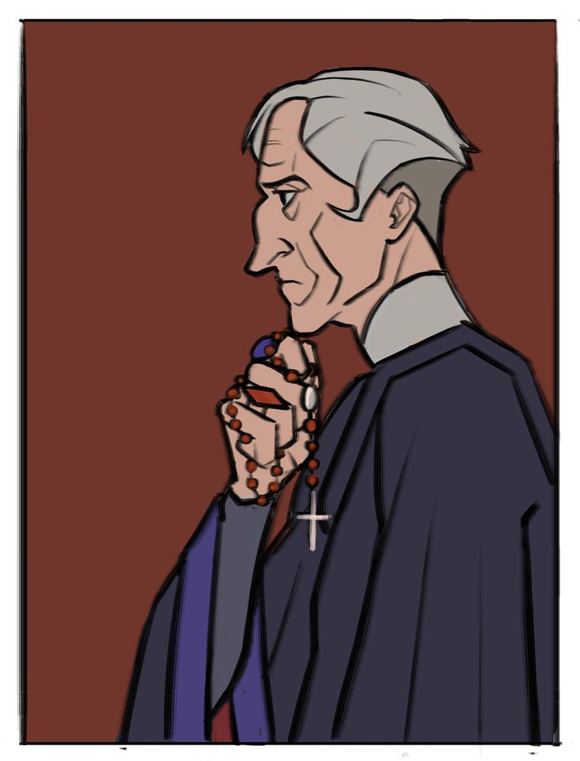
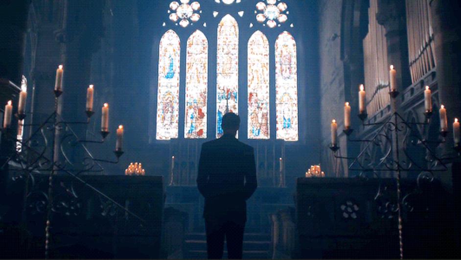

Собор Парижской Богоматери · Виктор Гюго
❖Клод Фроло — это сложный, трагичный и психологически глубокий персонаж романа. В поверхностном анализе он часто выглядит просто «злым священником», но на самом деле его история — это исследование того, как светлый ум и благочестие могут быть разрушены подавленной страстью и социальными запретами.
Архидьякон собора Парижской Богоматери. Ученый, алхимик, богослов. Второй по значимости человек в соборе после епископа.
ВозрастОколо 36 лет на момент основных событий романа.
ПрошлоеРодился в скромной дворянской семье. Рано осиротел, сам выучился, ушел в духовное сословие. В 20 лет стал священником.
БлизкиеВоспитывал своего младшего брата Жана (бездельника) и усыновил уродливого горбуна Квазимодо, которого все хотели сжечь.
Главный внутренний конфликт героя происходит между аскетичным религиозным долгом и всепоглощающей, демонической страстью.
Его имя восходит к латинскому claudus — «хромой» и приобретает символический смысл — человек с душевным изъяном, хромой душой в облике праведника. Так Гюго показывает гротеск внутреннего и внешнего состояния героя и его души. Фроло внешне благочестив, но внутри «хромает» — не может любить здоровой любовью.
В литературоведении и справочных источниках (включая французскую Википедию и академическое издание OpenEdition Books) образ Клода Фроло нередко определяется как «архетип интеллектуала» — учёного, одержимого поиском абсолютного знания. Кроме того, его образ сопоставляют с Фаустом: подобно гётевскому герою, Фроло переступает границы дозволенного в своём стремлении к познанию.
В то же время его внутренний конфликт между религиозным долгом и всепоглощающей страстью позволяет говорить о нём как о «трагическом злодее» — персонаже, который не наслаждается злом, а является его жертвой.
Гюго описывает Фроло как человека строгой и мрачной красоты.

Высокий, бледный, лысеющий (большой высокий лоб — признак ума). Глубоко посаженные, горящие глаза. Губы тонкие, лицо аскетичное.
Всегда строгая чёрная сутана (ряса), скрывающая фигуру.
Когда он появляется в соборе, люди отступают в страхе. Они чувствуют что-то нечеловеческое, надломленное. Он производит впечатление призрака или вампира.

Он был лучшим учёным своего времени. Свободно говорил на нескольких мёртвых языках, знал медицину, астрономию. Он искренне любил науку.
МилосердиеОднажды он пожалел младенца-урода, которого хотели сжечь на «ведьмином костре» (Квазимодо). Фроло усыновил его, дал имя, научил говорить и сделал звонарём. Он был единственным, кто не боялся чудовища.
Аскетизм и самодисциплинаДо встречи с Эсмеральдой он жил в холоде, голоде (подавлял плоть), спал на каменном полу, питался хлебом и водой.
Забота о семьеОн мучительно терпел выходки своего брата Жана, платил за его учёбу и воровство, вытаскивал из тюрем. Это единственный человек, которого он любил чистой любовью.
Будучи священником, он не имеет права желать женщину. Годами он не позволял себе никаких влечений и строго контролировал свои мысли и желания, но все его старания обернулись крахом из-за страсти к Эсмеральде, которая приобрела форму болезни и безумия.
Лицемерие и ханжествоОн проповедует смирение, но сам одержим гордыней. Он учит любви к Богу, но в то же время набрасывается на Него с обвинениями и злостью из-за собственной беспомощности против своих чувств.
Ревность и собственничествоОн хочет сделать Эсмеральду своей, и если она не достанется ему, то не достанется никому. Он ранит Феба на свидании, потому что не может терпеть её близости с офицером.
Мстительность и жестокостьКогда девушка отвергает его любовь, он использует церковный и светский суд, чтобы обвинить её в колдовстве. Он лично приходит в подземелье пытать её и предлагает ей выбрать: «Ты будешь моей или умрёшь».
Церковь того времени учила, что женщина — это «сосуд дьявола». Фроло хочет любить, но его вера говорит, что желать — значит продать душу дьяволу. Он сам верит, что Эсмеральда — это посланница Сатаны, посланная погубить его. Поэтому он кричит ей во время пыток: «Ах, так ты не ведьма? Тогда почему я горю в аду, глядя на тебя?»
2. Зеркало КвазимодоКвазимодо любит Эсмеральду чистой безответной любовью, а Фроло одержим девушкой чуть ли не до безумия. Оба монстра: один — внешний, но добрый внутри; второй — внутренний, но сдержан и уважаем снаружи. Когда Квазимодо сбрасывает Фроло с собора, он убивает не «хозяина», а своего создателя, который научил его злу.
3. Фраза «ΑΝΑΓΚΗ» (Рок)Фроло вырезал это греческое слово на стене башни. Это его девиз. Он чувствует себя марионеткой судьбы. Ему кажется, что он не свободен. Он не говорит, что хочет зла, а скорее пытается сказать, что его вынуждают совершить его, что он не властен над своей судьбой и всё происходит по воле рока.
Фроло — это человек, который потерял веру, но не перестал быть религиозным. Он ненавидит Бога за то, что тот послал ему испытание, которое он не может вынести. Он не может отказаться от своего сана, но и не может жить по его законам.
В итоге, когда он видит, что Эсмеральду казнят, а Квазимодо сбрасывает его с собора, — это освобождение от его собственного ада. Его последний взгляд был обращён к небу, но не с молитвой, а с проклятием.
«Так судьба сталкивает человека с его собственной природой»
И в бездне он нашёл лишь отражение своего лица